El mejor team de Peaches 🔥
Grandes temazos
Conoce gente talentosa
Participa en divertidas actividades
Quiénes somos
Nosotros
Historia
PEACHES inicia con la visión de nuestra fundadora, Alix, quien decidió fundar un espacio alternativo a los formatos tradicionales de los grupos actuales. De la mano de nuestra primera generación de administradores, se estructuró un proyecto cuyo enfoque va más allá de la simple recepción de proyectos musicales.
Objetivo
Nuestro objetivo principal es ofrecer un acompañamiento constante a través de la retroalimentación constructiva, impulsando así el desarrollo técnico y artístico de nuestros integrantes en las áreas de canto y doblaje.
Síguenos en nuestras redes
Fundadores


Staff


Dinámica
Actividades del mes. Tenemos 2 actividades semanales, 1 actividad mensual y una semana de descanso. Cada actividad incluye canto y doblaje: se publican juntas, pero cada una se entrega por separado.
Semanal vs. mensual. La semanal es opcional. La mensual sí cuenta, y si no la entregas se marca como falta.
Faltas y strikes. 4 faltas se convierten en un strike. Al llegar a 3 strikes, quedas fuera del team.
Purga. Se hace cuando el equipo de administración lo considere conveniente. Quien no entregue en ese momento, queda fuera de inmediato.
Streams. Son los sábados a las 7:00 p. m., hora de México. Calculando tu hora local…
Comunidad sana, basada en respeto.